大模型实战营第四次课笔记
这是大模型实战营第四次课的笔记
背景知识
Finetune概述
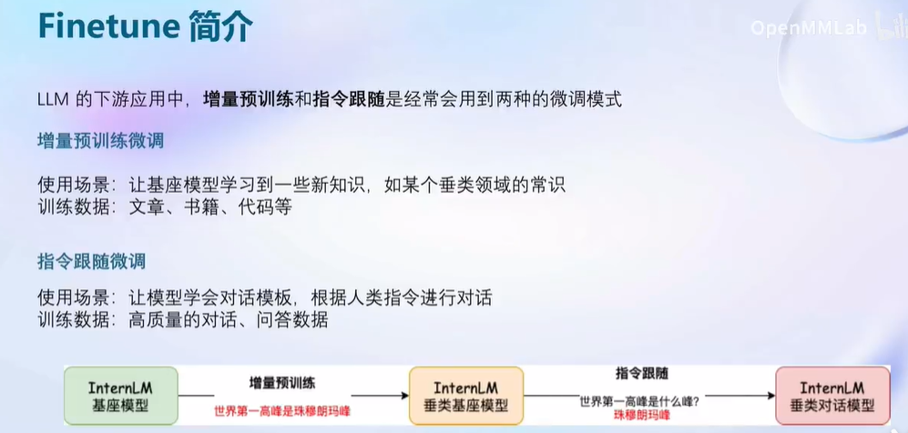
主要分为增量预训练以及指令微调这两种模型，增量预训练对显存要求较高，主要是为了让模型获得更多的知识；而指令微调对显存要求较低，主要是为了适配对话需求，能更好地回答问题。
指令微调
首先要将数据组织成JSON格式
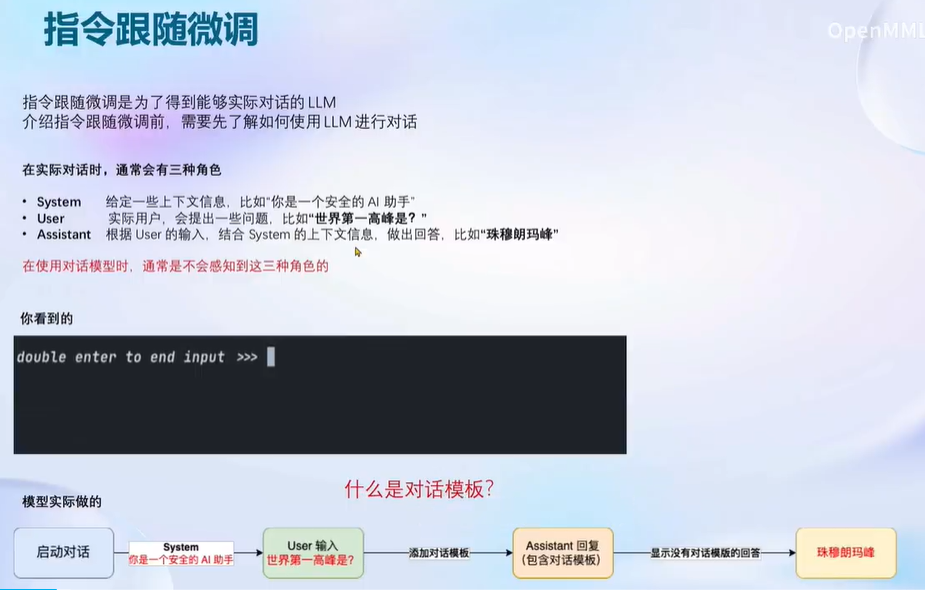
之后XTuner会将JSON格式的数据自动嵌入对话模板，以完成后续训练
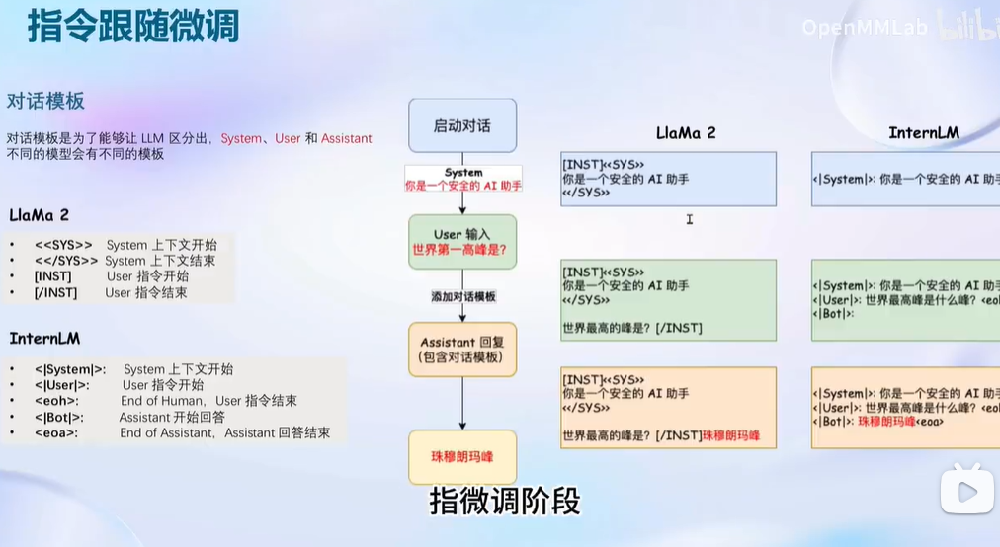
LoRA & QLoRA
- LoRA & QLoRA 简介
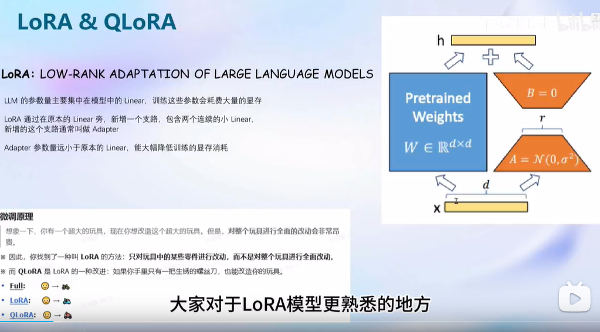
- Full LoRA QLoRA比较
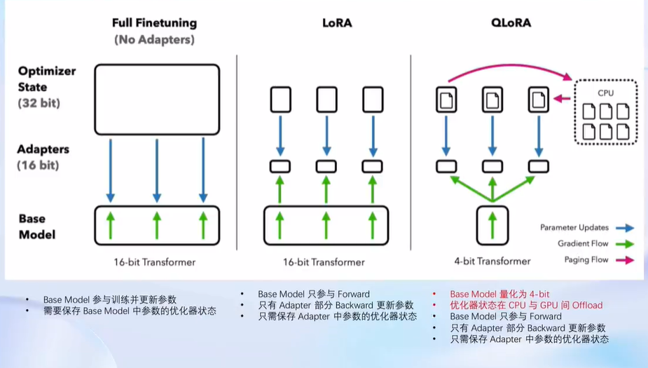
XTuner
- 简介
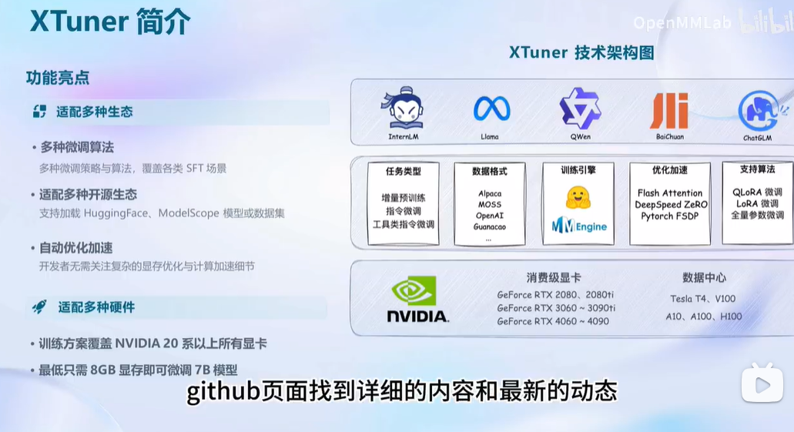
- 快速上手
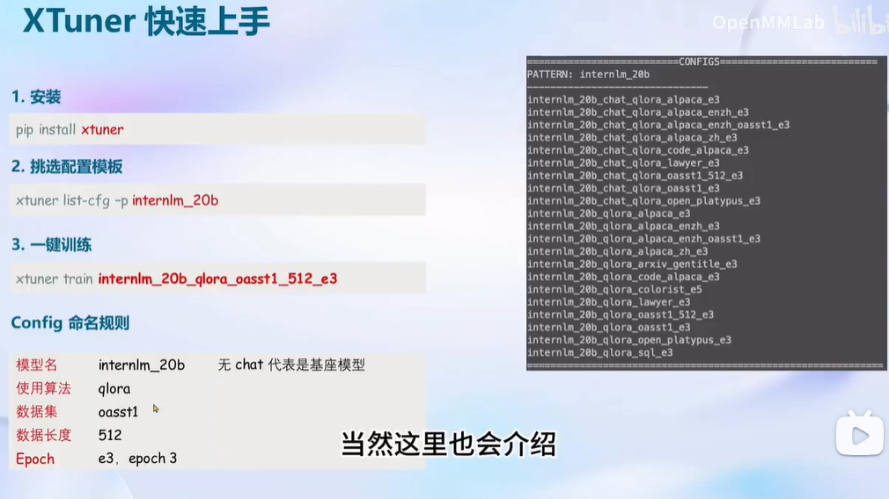
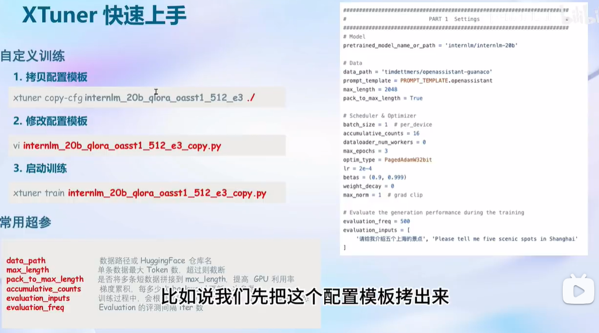
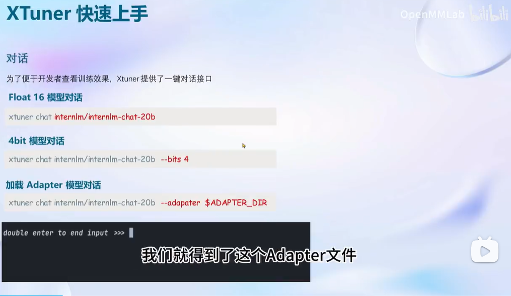
动手实践
oasst1 微调 InternLM-7B
按照这部分的引导，开始训练（单A100卡+DeepSpeed ZeRO-2大约需要 2h/epoch）：
训练中途可以看到evaluation的结果，这个挺不错
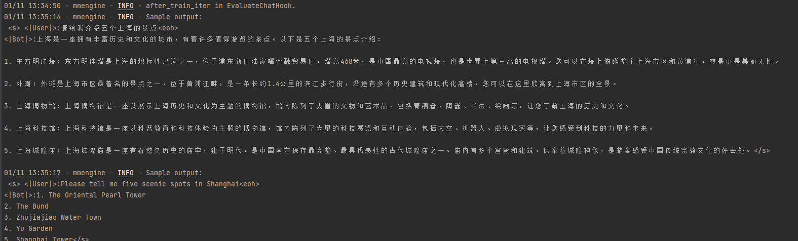
转换为HuggingFace模型，合并后在命令行运行，结果如下
转换为Huggingface模型时若报错：
2
3
4
mkl-service + Intel(R) MKL:
MKL_THREADING_LAYER=INTEL is incompatible with libgomp.so.1 library.
Try to import numpy first or set the threading layer accordingly. Set MKL_SERVICE_FORCE_INTEL to force it.执行如下代码即可解决
export MKL_THREADING_LAYER=GNU
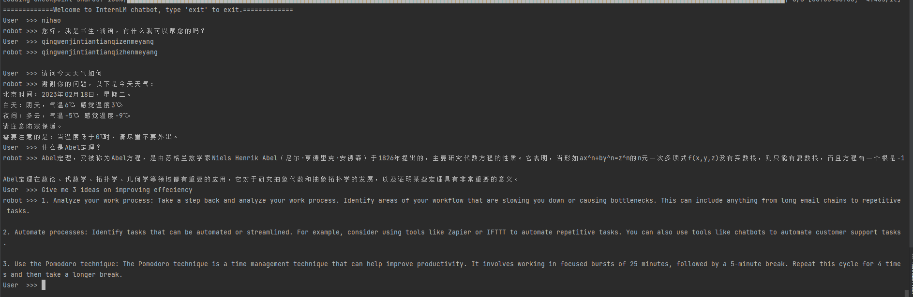
自定义微调 InternLM-7B（Medication QA数据集）
按照这部分的引导，开始训练（单A100卡+DeepSpeed ZeRO2大约需要 2min/epoch）
命令行运行结果如下
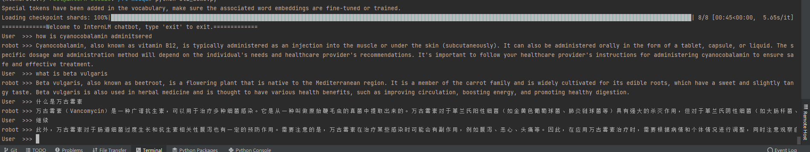
MS-Agent 微调 InternLM-7B
按照这部分的引导, 直接下载已微调好的Adapter, 注册serper账号（不能用gmail注册），之后用Lagent结合InternLM-7B完成一个具有API调用功能的智能助手。（需要2张A100推理）
命令行运行结果如下
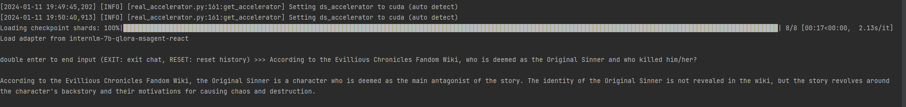
问了一个关于Evillious Chronicles（艾维里奥斯编年史）的问题，生成时间特别长，要十几分钟，而且不是很准确。